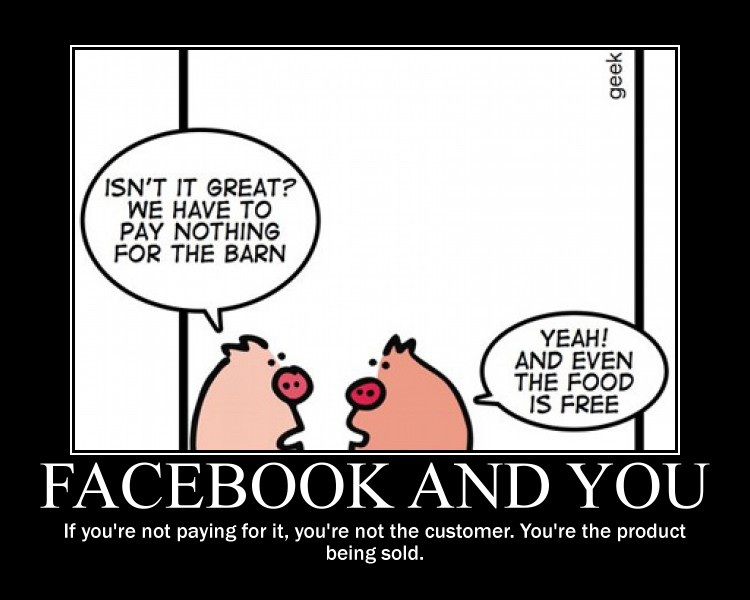

I resisted joining Facebook for quite some time, not because I’m a Luddite or an old timer, but rather because I know better than most people what goes on underneath the surface of such type of platforms. I also know well what happens to companies that become public and now face the constant pressure of produce results for the quarter. There is no free lunch…
However, most of my family in Chile, Europe and the USA have chosen that medium to communicate and share their daily lives and updates, without any regard for their sense of privacy or even a clear understanding of what they are giving away for the service they get. I was pretty much coerced into joining if I wanted to have any awareness of what’s going on with them.
The concept of personal privacy was a revelation for me when I moved to the USA back in 2000. I had never heard before that you can even have such a right, but once you have it, it’s very hard to let it go willingly. But with our busy daily lives, it’s so easy to take it for granted. In practice, to maintain privacy in the digital age you have to actively work to make sure you achieve it, most of the time with some trade off involved.

After almost a year of participating in Facebook (to the bare minimum extent possible) I feel comfortable enough to let my family know that I’m done with it. I’ve decided to gracefully exit the platform for similar reasons to why I also stopped using Gmail. The steps I took were:
- Give everybody a clear explanation for my reasoning behind the decision and make sure they understand it’s nothing personal. In the process, make sure you have their contact information via email, phone or any other more permanent form of communication.
- Wait a few days, and unfriend everybody, one by one.
- Delete every post and ‘Like’ ever made.
- Lock down my profile by displaying minimal information, and disallowing anyone from writing into my wall.
- Deactivating any external device.
- Deactivating Facebook as a platform.
- Leave a barebones profile with a public link to my site if someone needs to reach me.
- Change your picture to something generic, or an avatar, etc. (make sure you have proper rights).
It’s important not to completely delete the account to avoid a fake profile from being created on my behalf.
From time to time I have friends and family that also get fed up with Facebook. I intent to capitalize on those feelings next time they pop up. If I have enough interest, I may run my own Dispora or Friendica node. In the meantime, I opened an account on Despora.de to kick the tires with the platform and I have to say, it’s very polished and contains fairly advanced features. It’s definitely worth checking.
comments powered by Disqus